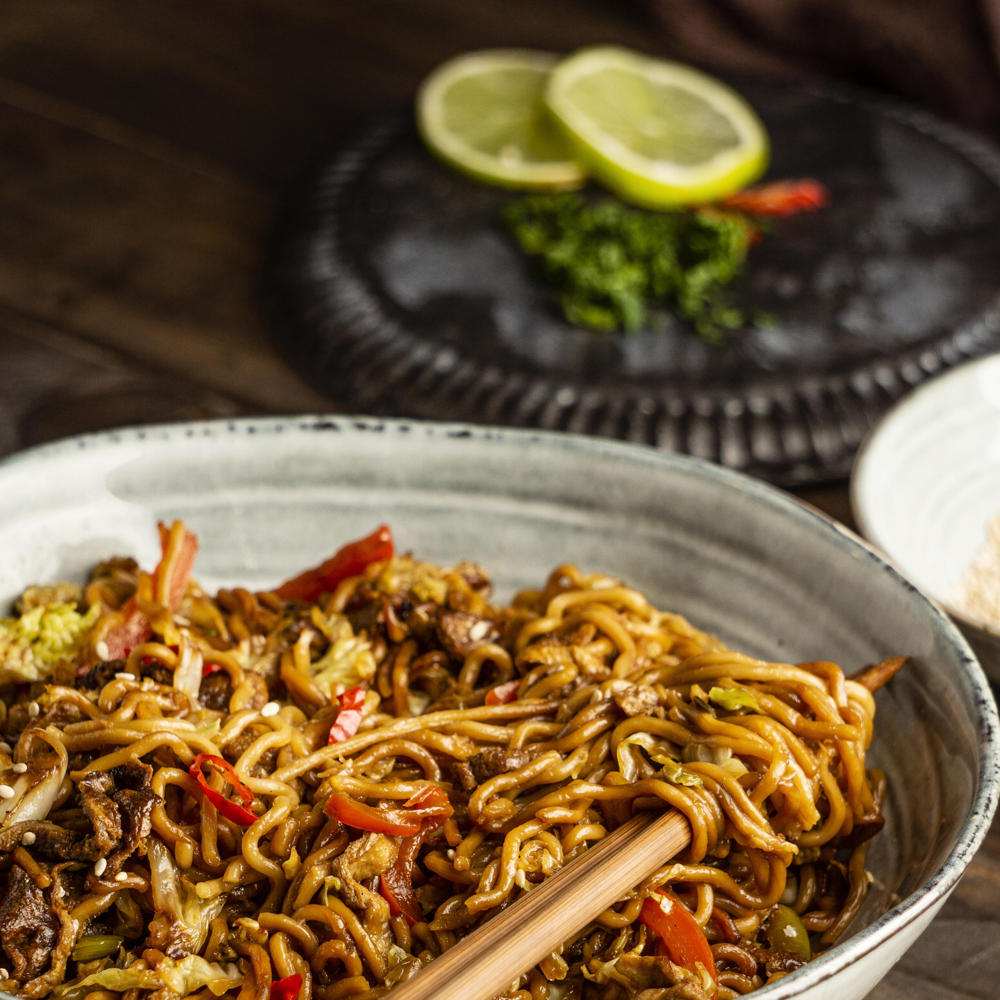

Homepage
Seafood Noodles

Description
A delicious bowl of seafood noodles, rich in color and packed with flavor.
The stir-fried noodles are coated in a savory sauce and tossed with fresh vegetables, tender seafood, and a touch of spice.
Garnished lightly and served hot, this dish delivers the perfect balance of taste and satisfaction in every bite.
Ingredients
- Noodles
- Mixed Seafood(Shrimps,Squid)
- Soy Suace
- Garlic
- Ginger
- Red Chili Pepper
- Cabbage and Bell Peppers
- Cooking Oil
- Spring Onions(for garnish)
- Salt
Steps
- Boil noodles until just tender,then drain.
- Heat oil in a pan,sauté garlic,ginger,and chili.
- Add seafood and cook until done.
- Toss in vegetables and stir-fry briefly.
- Add noodles, pour in soy sauce,and mix well.
- Garnish with spring onions and serve hot.